一个简单的几种memcpy实现的性能测试对比
1. 测试代码
测试代码是在Clickhouse memcpy-bench基础上改造过来的 ClickHouse/utils/memcpy-bench at master · ClickHouse/ClickHouse
不过我们这里没有使用clickhouse的统计方式，而是使用google benchmark驱动。代码放在了这里 codes/cc/sr-test/memcpy-bench at master · dirtysalt/codes
这个测试相比CK测试会简化一些，只关注单线程上的memcpy性能，然后选择了几种尺寸进行测试，并且在每种尺寸上做了微调确保没有完全对齐。 UPDATE: 后面增加了多线程场景下的比较。
#define BM(IMPL) \ void BM**IMPL(benchmark::State& state) { \ size_t size = state.range(0); \ std::vector<uint8_t> vec_dst(size), vec_src(size); \ uint8_t* dst = vec_dst.data(); \ uint8_t* src = vec_src.data(); \ memset(src, 0x3f, size); \ std::mt19937 gen32(0); \ for (auto _ : state) { \ /* (1-(x)/2048) * size. x in [0, 256] */ \ size_t copy_size = (1 - (gen32() & 0x0ff) * 0.000488281) * size; \ IMPL(dst, src, size); \ /* /// Execute at least one SSE instruction as a penalty after running AVX code. */ \ __asm__ __volatile__("pxor %%xmm15, %%xmm15" ::: "xmm15"); \ } \ } static constexpr size_t N = 1000000; static constexpr size_t KB = 1024; static constexpr size_t MB = 1024 * 1024; #define VARIANT(N, NAME) \ BM(NAME) \ BENCHMARK(BM**NAME)->Name(#NAME)->RangeMultiplier(4)->Range(16, 128 * MB)->Threads(1)->Threads(8);
其中有好几个版本是glibc自带的，后面就不分析了，他们都是汇编实现，比较难看懂。
VARIANT(21, __memcpy_erms) VARIANT(22, __memcpy_sse2_unaligned) VARIANT(23, __memcpy_ssse3) VARIANT(24, __memcpy_ssse3_back) VARIANT(25, __memcpy_avx_unaligned) VARIANT(26, __memcpy_avx_unaligned_erms) VARIANT(5, memcpy_jart)
2. 初步测试结果
2.1. 超小尺寸
超小尺寸包含下面几个尺寸：16, 64, 256, 1024.
比较好的实现有：
- memcpy_my
- avx_unaligned
- avx_unaligned_erms
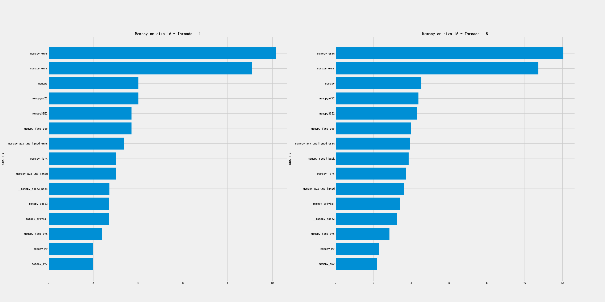
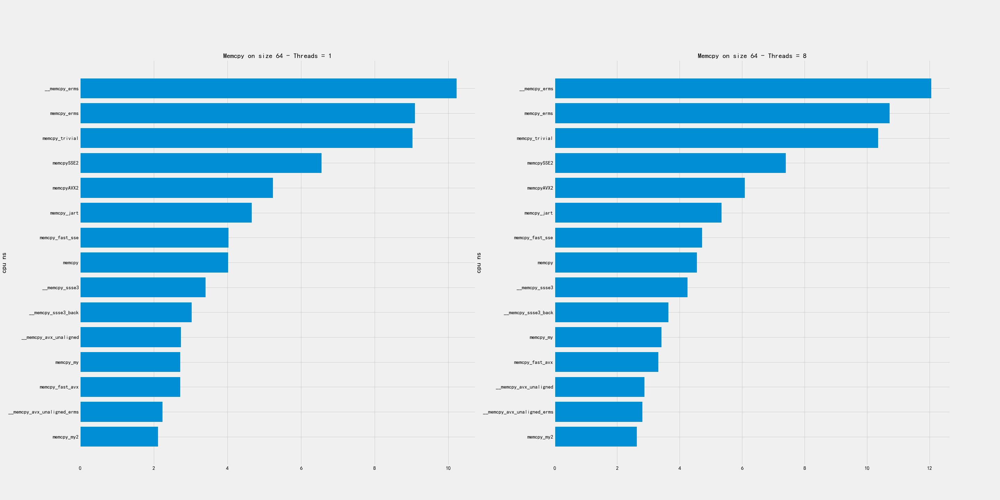
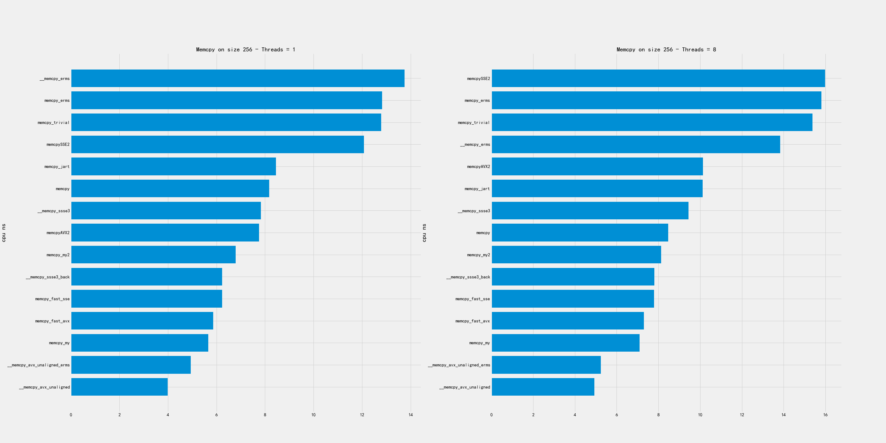
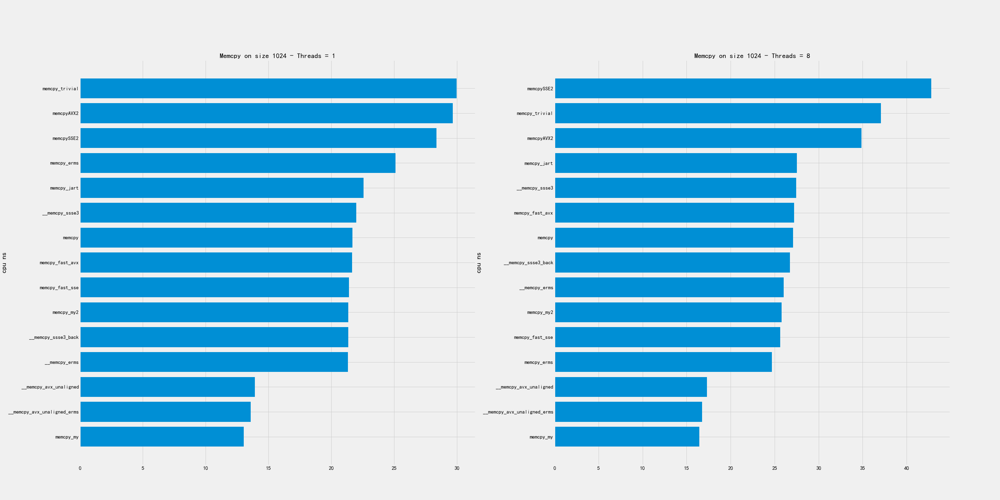
2.2. 小尺寸
小尺寸包含下面几个尺寸：4K, 16K, 64K
比较好的实现有：
- 4K和16K上, erms版本最好，my/avx_unaligned表现也不错。
- 64K上，my/my2/avx_unaligned/AVX2表现都不错
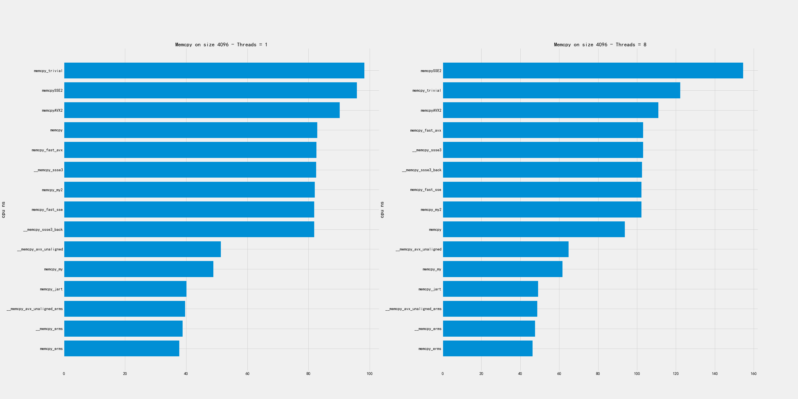
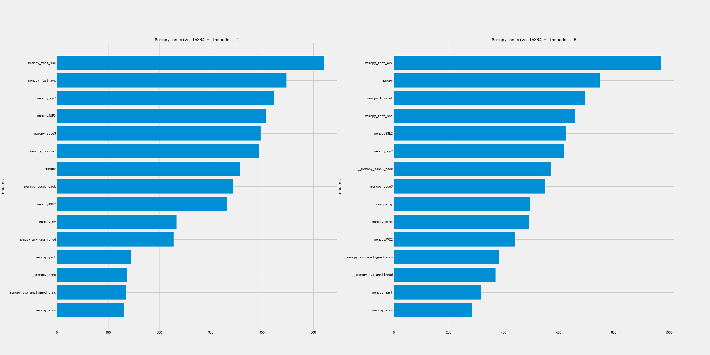
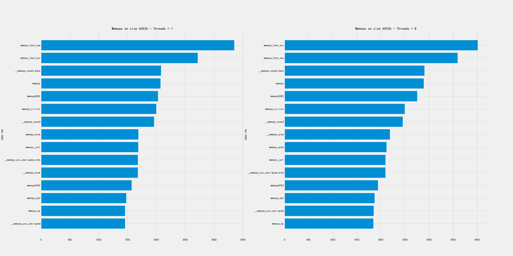
2.3. 中尺寸
中尺寸包含下面几个尺寸：256K, 1MB, 4MB
比较好的实现有：
- 256K上 my/my2/AVX2/erms/avx_unaligned 表现都可以
- 1MB上 erms/avx_unaligned_erms 最好，my版本表现也可以
- 4MB上 my/my2/AVX2/avx_unaligned 表现都可以
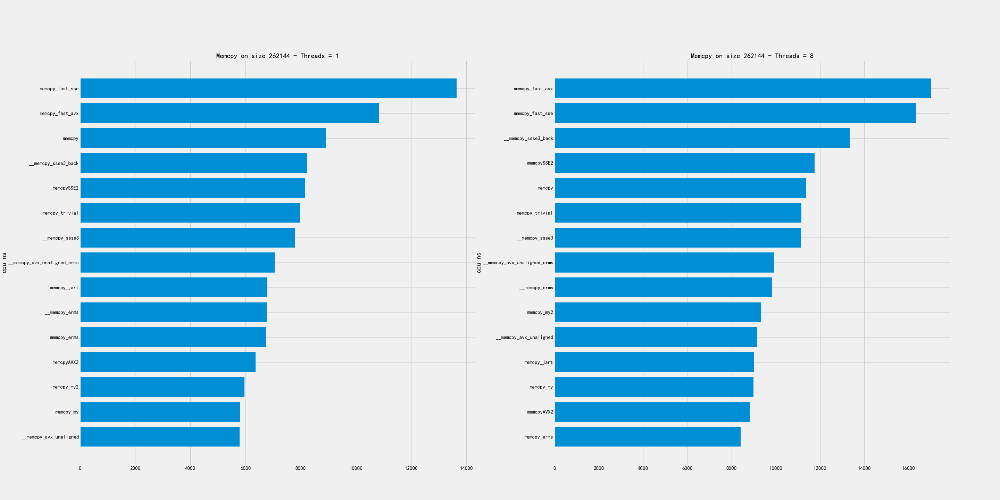
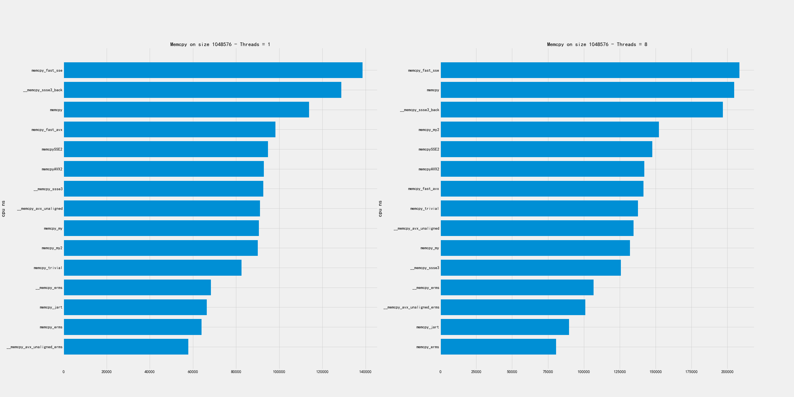
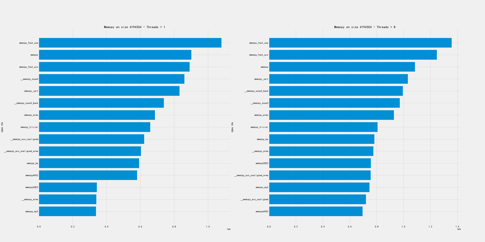
2.4. 大尺寸
大尺寸包含下面几个尺寸：16MB, 32MB, 128MB
在这个尺寸上的拷贝，单线程和多线程的排名差异非常大。
- 单线程上 my/my2/AVX2 似乎实现比较好
- 多线程上 avx_unaligned/erms 似乎比较好
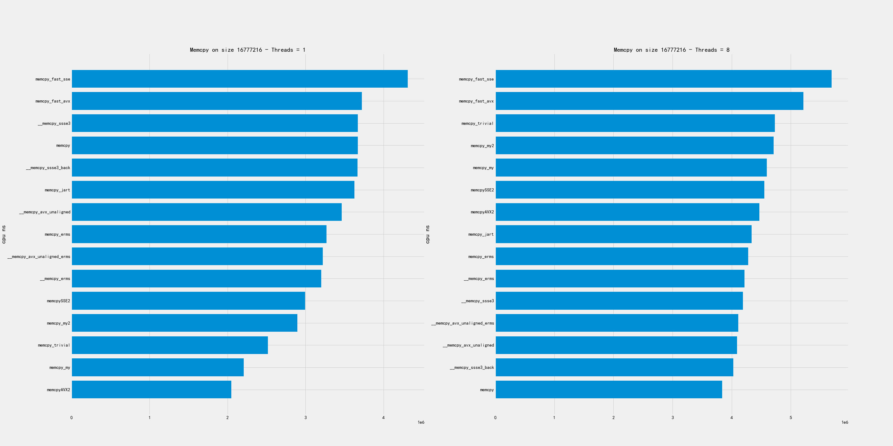
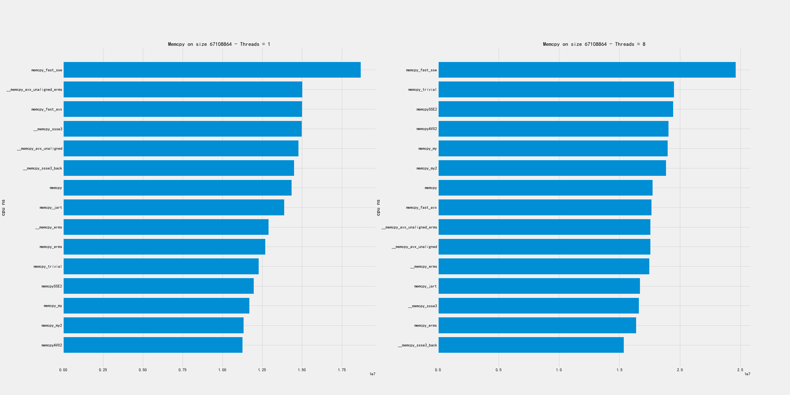
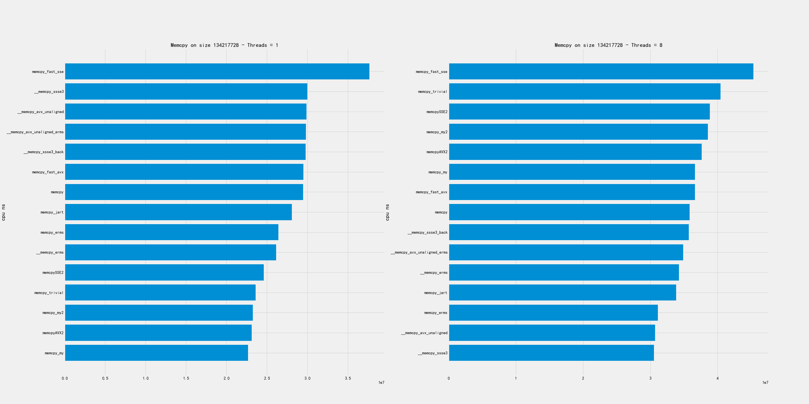
2.5. 初步总结
总结如下：
- 超小尺寸上：my/my2/avx_unaligned 不错
- 小尺寸上: my/my2/avx_unaligned/AVX2 不错
- 中尺寸上：my/my2/avx_unaligned/AVX2 不错
- 大尺寸上：
- 单线程： my/my2/AVX2
- 多线程：avx_unaligned/erms
- 在某些大小上，erms效果会特别好。
3. 实现分析
3.1. memcpy_erms
这个实现比较简单，不过只是对于x86有效
static void* memcpy_erms(void* dst, const void* src, size_t size) { asm volatile("rep movsb" : "=D"(dst), "=S"(src), "=c"(size) : "0"(dst), "1"(src), "2"(size) : "memory"); return dst; }
3.2. memcpy_AVX2
这个实现大致分为几个部分：
- 小内存(<=32)拷贝走 `memcpy_tiny`
- 按照32字节对齐，然后每次拷贝32字节
- 对最后尾部继续使用 `memcpy_tiny` 进行拷贝
static void* memcpyAVX2(void* __restrict destination, const void* __restrict source, size_t size) { unsigned char* dst = reinterpret_cast<unsigned char*>(destination); const unsigned char* src = reinterpret_cast<const unsigned char*>(source); size_t padding; // small memory copy if (size <= 32) return memcpy_tiny(dst, src, size); // align destination to 16 bytes boundary padding = (32 - (reinterpret_cast<size_t>(dst) & 31)) & 31; if (padding > 0) { __m256i head = _mm256_loadu_si256(reinterpret_cast<const __m256i*>(src)); _mm256_storeu_si256(reinterpret_cast<__m256i*>(dst), head); dst += padding; src += padding; size -= padding; } // medium size copy __m256i c0; for (; size >= 32; size -= 32) { c0 = _mm256_loadu_si256(reinterpret_cast<const __m256i*>(src)); src += 32; _mm256_store_si256((reinterpret_cast<__m256i*>(dst)), c0); dst += 32; } memcpy_tiny(dst, src, size); return destination; }
3.3. memcpy_tiny
这个函数其实是来自于 https://github.com/skywind3000/FastMemcpy. 针对的1-128字节所有的可能，
- 各种大小进行了配对，比如65和1。 因为65拷贝前面64个字节，然后1字节拷贝的部分可以共享。
- 对于2,4,8字节分别使用uint16_t, uint32_t, uint64_t 进行拷贝
- 对于16,32,64字节则使用sse2_16,sse2_32,sse2_64函数来拷贝
- 这种实现问题在于展开text段会比较大，对于icache不是特别好。
//--------------------------------------------------------------------- // tiny memory copy with jump table optimized //--------------------------------------------------------------------- /// Attribute is used to avoid an error with undefined behaviour sanitizer /// ../contrib/FastMemcpy/FastMemcpy.h:91:56: runtime error: applying zero offset to null pointer /// Found by 01307_orc_output_format.sh, cause - ORCBlockInputFormat and external ORC library. __attribute__((__no_sanitize__("undefined"))) inline void* memcpy_tiny(void* __restrict dst, const void* __restrict src, size_t size) { unsigned char* dd = ((unsigned char*)dst) + size; const unsigned char* ss = ((const unsigned char*)src) + size; switch (size) { case 64: memcpy_sse2_64(dd - 64, ss - 64); [[fallthrough]]; case 0: break; case 65: memcpy_sse2_64(dd - 65, ss - 65); [[fallthrough]]; case 1: dd[-1] = ss[-1]; break; case 66: memcpy_sse2_64(dd - 66, ss - 66); [[fallthrough]]; case 2: *((uint16_unaligned_t*)(dd - 2)) = *((const uint16_unaligned_t*)(ss - 2)); break; case 67: memcpy_sse2_64(dd - 67, ss - 67); [[fallthrough]]; case 3: *((uint16_unaligned_t*)(dd - 3)) = *((const uint16_unaligned_t*)(ss - 3)); dd[-1] = ss[-1]; break; case 68: memcpy_sse2_64(dd - 68, ss - 68); [[fallthrough]]; case 4: *((uint32_unaligned_t*)(dd - 4)) = *((const uint32_unaligned_t*)(ss - 4)); break; ... } static INLINE void memcpy_sse2_16(void* __restrict dst, const void* __restrict src) { __m128i m0 = _mm_loadu_si128((reinterpret_cast<const __m128i*>(src)) + 0); _mm_storeu_si128((reinterpret_cast<__m128i*>(dst)) + 0, m0); } static INLINE void memcpy_sse2_32(void* __restrict dst, const void* __restrict src) { __m128i m0 = _mm_loadu_si128((reinterpret_cast<const __m128i*>(src)) + 0); __m128i m1 = _mm_loadu_si128((reinterpret_cast<const __m128i*>(src)) + 1); _mm_storeu_si128((reinterpret_cast<__m128i*>(dst)) + 0, m0); _mm_storeu_si128((reinterpret_cast<__m128i*>(dst)) + 1, m1); }
3.4. memcpy_my/my2
代码比较长，完整代码可以看这里 https://github.com/dirtysalt/codes/blob/master/cc/sr-test/memcpy-bench/memcpy-impl.h#L308. 两者实现逻辑非常接近，差别在于 `memcpy_my2` 版本在
- `if (size < 30000 || !have_avx)` 条件下面使用128字节sse2版本，因为使用avx指令会有额外开销。
- 对于大块内存拷贝，不会再使用 `goto tail` 来单独处理尾部的字符串，而是直接使用重复拷贝来避开tail bytes的处理。
另外 `memcpy_my` 的 avx版本似乎是有点问题（看上去汇编代码没有问题，但是测试不能通过），所以这里只能测试它的sse2版本。
3.4.1. 16字节以内
16字节以内走下面这个逻辑，使用的是 `__builtin_memcpy` 感觉这个部分应该是足够高效了。
tail: if (size <= 16) { if (size >= 8) { __builtin_memcpy(dst + size - 8, src + size - 8, 8); __builtin_memcpy(dst, src, 8); } else if (size >= 4) { __builtin_memcpy(dst + size - 4, src + size - 4, 4); __builtin_memcpy(dst, src, 4); } else if (size >= 2) { __builtin_memcpy(dst + size - 2, src + size - 2, 2); __builtin_memcpy(dst, src, 2); } else if (size >= 1) { *dst = *src; }
3.4.2. 32字节以内
32字节以内先拷贝16字节，然后走上面的小于16字节的逻辑。但是这个部分并没有使用sse(m128i)
if (size <= 32) { __builtin_memcpy(dst, src, 8); __builtin_memcpy(dst + 8, src + 8, 8); dst += 16; src += 16; size -= 16; goto tail; }
3.4.3. 128/256字节以内
avx版本是先对 `dst+size-32` 和 `src+size-32` 进行单独处理，然后分别按照32字节进行拷贝，这样会出现重复拷贝，但是没有tail bytes判断情况。
if (size <= 256) { __asm__("vmovups -0x20(%[s],%[size],1), %%ymm0\n" "vmovups %%ymm0, -0x20(%[d],%[size],1)\n" : [d] "+r"(dst), [s] "+r"(src) : [size] "r"(size) : "ymm0", "memory"); while (size > 32) { __asm__("vmovups (%[s]), %%ymm0\n" "vmovups %%ymm0, (%[d])\n" : [d] "+r"(dst), [s] "+r"(src) : : "ymm0", "memory"); dst += 32; src += 32; size -= 32; } }
sse2版本和avx版本其实是差不过的，只不过按照16字节进行拷贝，同样不会有tail bytes的情况。
if (size <= 128) { _mm_storeu_si128(reinterpret_cast<__m128i*>(dst + size - 16), _mm_loadu_si128(reinterpret_cast<const __m128i*>(src + size - 16))); while (size > 16) { _mm_storeu_si128(reinterpret_cast<__m128i*>(dst), _mm_loadu_si128(reinterpret_cast<const __m128i*>(src))); dst += 16; src += 16; size -= 16; } }
3.4.4. 128/256字节以外
这里就不粘贴avx版本了，大部分都是汇编代码，但是道理和sse2版本是差不多的:
- 先对dst进行对齐处理，对齐部分使用 `storeu` 版本
- 然后每次拷贝128字节，并且使用循环展开的方式
- 对于之后剩余的字节，使用 `goto tail` 进行单独处理。
/// Align destination to 16 bytes boundary. size_t padding = (16 - (reinterpret_cast<size_t>(dst) & 15)) & 15; if (padding > 0) { __m128i head = _mm_loadu_si128(reinterpret_cast<const __m128i*>(src)); _mm_storeu_si128(reinterpret_cast<__m128i*>(dst), head); dst += padding; src += padding; size -= padding; } /// Aligned unrolled copy. __m128i c0, c1, c2, c3, c4, c5, c6, c7; while (size >= 128) { c0 = _mm_loadu_si128(reinterpret_cast<const __m128i*>(src) + 0); c1 = _mm_loadu_si128(reinterpret_cast<const __m128i*>(src) + 1); c2 = _mm_loadu_si128(reinterpret_cast<const __m128i*>(src) + 2); c3 = _mm_loadu_si128(reinterpret_cast<const __m128i*>(src) + 3); c4 = _mm_loadu_si128(reinterpret_cast<const __m128i*>(src) + 4); c5 = _mm_loadu_si128(reinterpret_cast<const __m128i*>(src) + 5); c6 = _mm_loadu_si128(reinterpret_cast<const __m128i*>(src) + 6); c7 = _mm_loadu_si128(reinterpret_cast<const __m128i*>(src) + 7); src += 128; _mm_store_si128((reinterpret_cast<__m128i*>(dst) + 0), c0); _mm_store_si128((reinterpret_cast<__m128i*>(dst) + 1), c1); _mm_store_si128((reinterpret_cast<__m128i*>(dst) + 2), c2); _mm_store_si128((reinterpret_cast<__m128i*>(dst) + 3), c3); _mm_store_si128((reinterpret_cast<__m128i*>(dst) + 4), c4); _mm_store_si128((reinterpret_cast<__m128i*>(dst) + 5), c5); _mm_store_si128((reinterpret_cast<__m128i*>(dst) + 6), c6); _mm_store_si128((reinterpret_cast<__m128i*>(dst) + 7), c7); dst += 128; size -= 128; } goto tail;
3.5. CK版本注释
目前CK版本看上去像是 `memcpy_my` 这个版本，但是没有开启avx开关。 https://clickhouse.com/codebrowser/ClickHouse/base/glibc-compatibility/memcpy/memcpy.h.html
自己编写memcpy的好处有
- 独立于glibc, 不过如果我们静态链接glibc就没有问题了。
- 避开动态链接库里面的PLT开销
- 能有有助于内敛以及做IPA
- 提升整体查询性能
* It has the following benefits over using glibc's implementation: * 1. Avoiding dependency on specific version of glibc's symbol, like memcpy@@GLIBC_2.14 for portability. * 2. Avoiding indirect call via PLT due to shared linking, that can be less efficient. * 3. It's possible to include this header and call inline_memcpy directly for better inlining or interprocedural analysis. * 4. Better results on our performance tests on current CPUs: up to 25% on some queries and up to 0.7%..1% in average across all queries.
但是自己编写memcpy并不容易：CPU型号，size, 并行度等等，并且想要做到全面/正确的microbenchmark不容易。
* Writing our own memcpy is extremely difficult for the following reasons: * 1. The optimal variant depends on the specific CPU model. * 2. The optimal variant depends on the distribution of size arguments. * 3. It depends on the number of threads copying data concurrently. * 4. It also depends on how the calling code is using the copied data and how the different memcpy calls are related to each other. * Due to vast range of scenarios it makes proper testing especially difficult. * When writing our own memcpy there is a risk to overoptimize it * on non-representative microbenchmarks while making real-world use cases actually worse. * * Most of the benchmarks for memcpy on the internet are wrong. *
实现上有下面这些注意点：
- 对于小尺寸分支重要(减少分支或者是变成jmp table/switch)
- 处理非对齐尺寸(1,3,5,7字节)，通常使用重叠move
- 对于大尺寸可以使用sse/avx或者是rep movsb.（看上去大尺寸rep movsb比sse/avx要差点）
- avx-512会造成CPU降频, 混合sse/avx使用会有开销(但是好像最新的CPU是没有这个问题了的) https://www.zhihu.com/question/37230675/answer/273654228
- 循环展开最多8次，使用寄存器xmm0-xmm7或者是ymm0-ymm7(其实也有ymm8-ymm15). 但是这个也不是最优解。
- 使用unaligned load和aligned store (但是好像其实两者差别不是很大)
- 使用好prefetch以及non-temporal store比较困难。
* Let's look at the details:
*
* For small size, the order of branches in code is important.
* There are variants with specific order of branches (like here or in glibc)
* or with jump table (in asm code see example from Cosmopolitan libc:
* https://github.com/jart/cosmopolitan/blob/de09bec215675e9b0beb722df89c6f794da74f3f/libc/nexgen32e/memcpy.S#L61)
* or with Duff device in C (see https://github.com/skywind3000/FastMemcpy/)
*
* It's also important how to copy uneven sizes.
* Almost every implementation, including this, is using two overlapping movs.
*
* It is important to disable -ftree-loop-distribute-patterns when compiling memcpy implementation,
* otherwise the compiler can replace internal loops to a call to memcpy that will lead to infinite recursion.
*
* For larger sizes it's important to choose the instructions used:
* - SSE or AVX or AVX-512;
* - rep movsb;
* Performance will depend on the size threshold, on the CPU model, on the "erms" flag
* ("Enhansed Rep MovS" - it indicates that performance of "rep movsb" is decent for large sizes)
* https://stackoverflow.com/questions/43343231/enhanced-rep-movsb-for-memcpy
*
* Using AVX-512 can be bad due to throttling.
* Using AVX can be bad if most code is using SSE due to switching penalty
* (it also depends on the usage of "vzeroupper" instruction).
* But in some cases AVX gives a win.
*
* It also depends on how many times the loop will be unrolled.
* We are unrolling the loop 8 times (by the number of available registers), but it not always the best.
*
* It also depends on the usage of aligned or unaligned loads/stores.
* We are using unaligned loads and aligned stores.
*
* It also depends on the usage of prefetch instructions. It makes sense on some Intel CPUs but can slow down performance on AMD.
* Setting up correct offset for prefetching is non-obvious.
*
* Non-temporary (cache bypassing) stores can be used for very large sizes (more than a half of L3 cache).
* But the exact threshold is unclear - when doing memcpy from multiple threads the optimal threshold can be lower,
* because L3 cache is shared (and L2 cache is partially shared).
*
* Very large size of memcpy typically indicates suboptimal (not cache friendly) algorithms in code or unrealistic scenarios,
* so we don't pay attention to using non-temporary stores.
*
* On recent Intel CPUs, the presence of "erms" makes "rep movsb" the most benefitial,
* even comparing to non-temporary aligned unrolled stores even with the most wide registers.
关于memcpy使用asm写好还是C/C++写好
* memcpy can be written in asm, C or C++. The latter can also use inline asm. * The asm implementation can be better to make sure that compiler won't make the code worse, * to ensure the order of branches, the code layout, the usage of all required registers. * But if it is located in separate translation unit, inlining will not be possible * (inline asm can be used to overcome this limitation). * Sometimes C or C++ code can be further optimized by compiler. * For example, clang is capable replacing SSE intrinsics to AVX code if -mavx is used. * * Please note that compiler can replace plain code to memcpy and vice versa. * - memcpy with compile-time known small size is replaced to simple instructions without a call to memcpy; * it is controlled by -fbuiltin-memcpy and can be manually ensured by calling __builtin_memcpy. * This is often used to implement unaligned load/store without undefined behaviour in C++. * - a loop with copying bytes can be recognized and replaced by a call to memcpy; * it is controlled by -ftree-loop-distribute-patterns. * - also note that a loop with copying bytes can be unrolled, peeled and vectorized that will give you * inline code somewhat similar to a decent implementation of memcpy.
4. FIX `memcpy_my`
测试的时候发现 `memcpy_my` 的AVX版本有正确行问题，问题在下面这段代码上
if (size <= 256) { __asm__("vmovups -0x20(%[s],%[size],1), %%ymm0\n" "vmovups %%ymm0, -0x20(%[d],%[size],1)\n" : [d] "+r"(dst), [s] "+r"(src) : [size] "r"(size) : "ymm0", "memory"); while (size > 32) { __asm__("vmovups (%[s]), %%ymm0\n" "vmovups %%ymm0, (%[d])\n" : [d] "+r"(dst), [s] "+r"(src) : : "ymm0", "memory"); dst += 32; src += 32; size -= 32; }
如果放在 https://gcc.godbolt.org/ 里面编译会发现，这个编译结果是有问题的。汇编代码的40行，如果<=256那么进入L7, 但是L7直接就ret了。说明这个部分其实是没有做任何处理的。如果在 asm 关键字后面加上 volatile 关键字则没有问题。
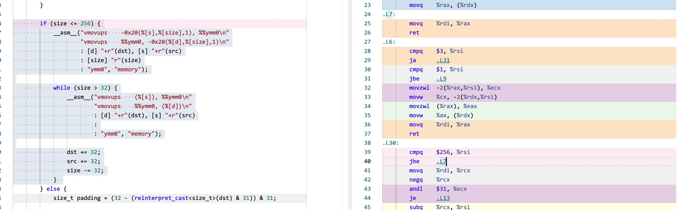
增加了volatile关键字之后就没有问题
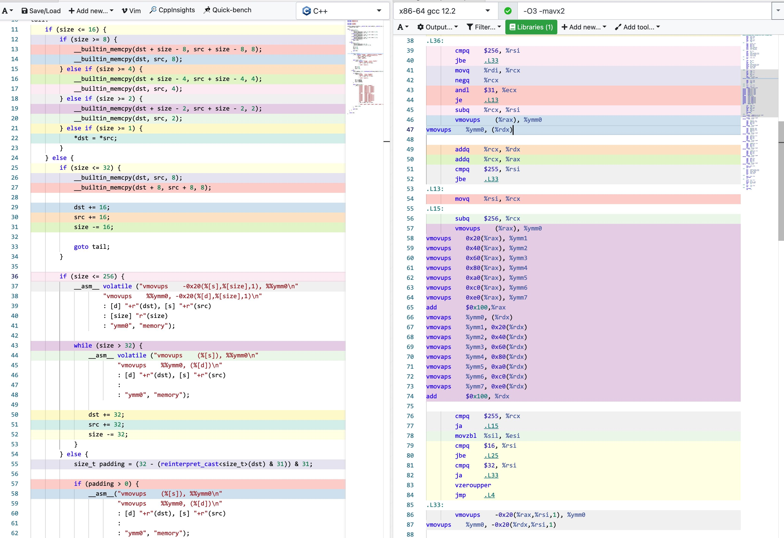
5. 改进方案设计
个人觉得可以根据 `memcpy_my` 这个版本为基础， 然后在某些区间上使用erms特性来做改善 。
实现放在了这个PR里面 [[Enhancement] improve performance of `inline_memcpy` by dirtysalt · Pull Request #13330 · StarRocks/starrocks](https://github.com/StarRocks/starrocks/pull/13330)
下图分别几种尺寸下面及几个版本的对比：
- memcpy_gutil 当前SR使用的版本
- memcpy_my(noavx) 当前CK使用的版本
- memcpy_sr PR里面提交的版本
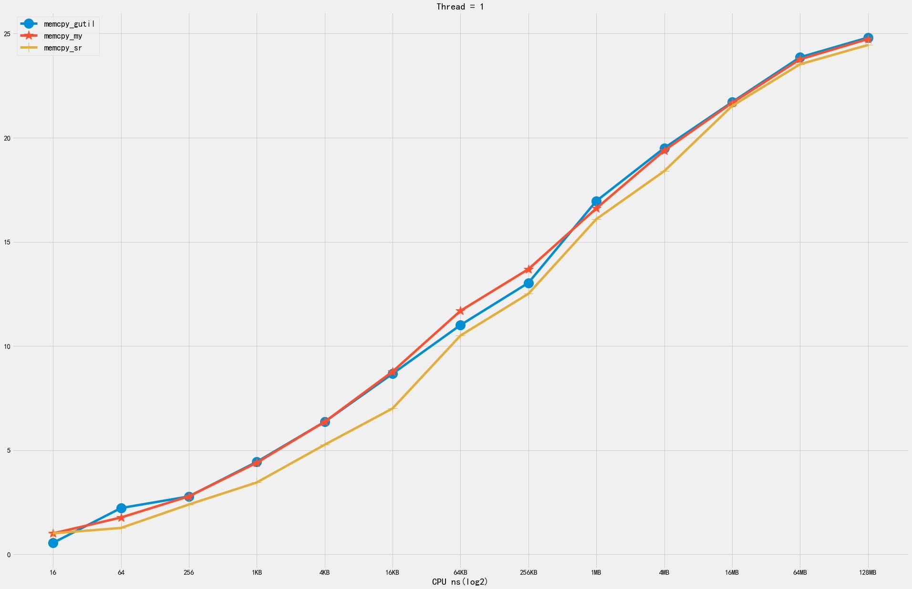 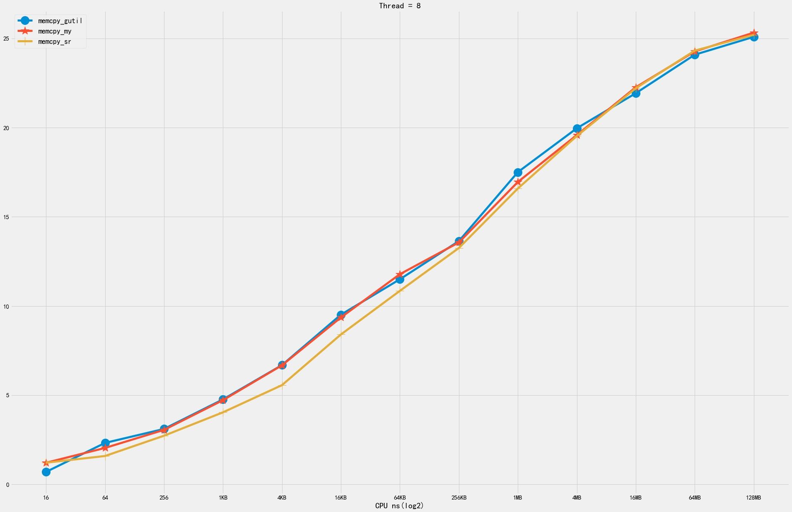
6. 细粒度分析
我针对下面几个实现做了细粒度的分析：
- avx_unaligned
- memcpy_my
- memcpy_erms
- memcpy_gutil
- memcpy_sr
6.1. 1KB~64KB
从1KB到64KB，按照1KB进行步长做分析，有这么几个发现：
- erms 在某个很小的范围有优势，其他范围则没有什么优势
- memcpy_my 有个问题就是4KB左右会存在一定的波动
- memcpy_sr 相对比较平稳，总体比memcpy_my(avx)版本差些，但是没有尖峰出现
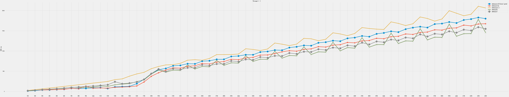
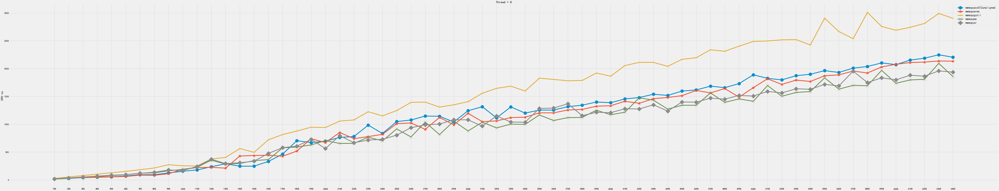
6.2. 32KB~2MB
从32KB到2MB，按照32KB进行步长分析，有这么几个发现：
- 因为 memcpy_gutil 差距比较大，所以就删除了这个
- 从512KB到2MB区间内，erms版本不不管是单线程还是多线程都好。
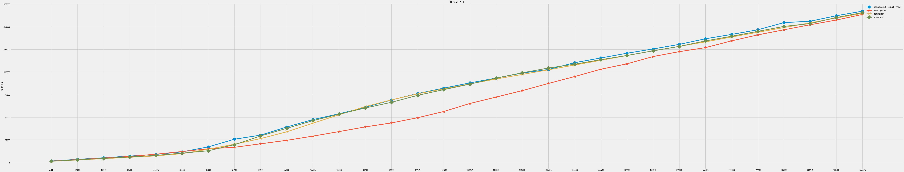 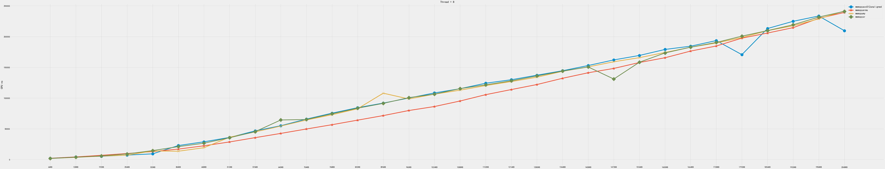
6.3. 2MB~64MB
从2MB到64MB，按照1MB进行步长分析，有这么几个发现：
- 单线程上面 my/sr 版本更好些
- 多线程版本 avx_unaligned和erms版本更好些
- 很难选择一个比较general的版本
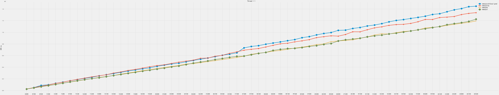 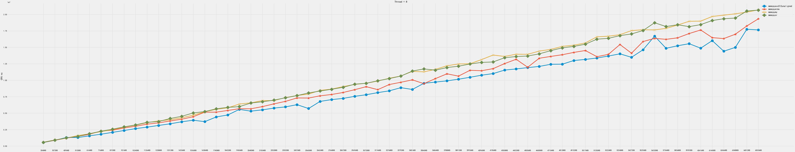